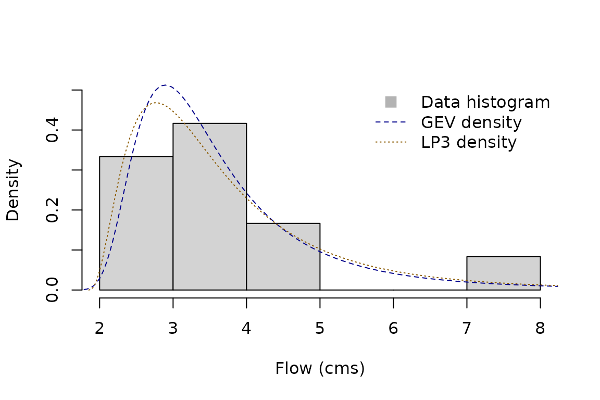
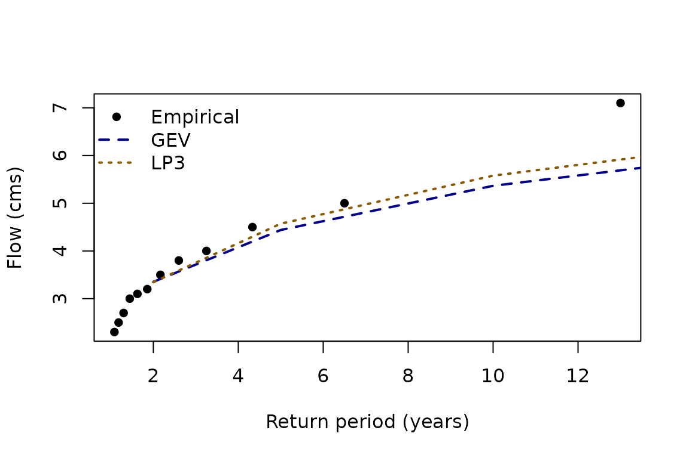

Fitting Distribution Families with famish
fitting.Rmdfamish works with distribution
families—sets of related distributions indexed by
parameters—rather than single distributions. For example, the Normal
family is indexed by its mean and standard deviation, while the Beta
family is indexed by shape parameters
and
.
Once parameters are fixed, you have a specific distribution inside the
family.
famish aims to connects those families to data (or other
targets such as expert-elicited quantiles) using two ideas:
-
Fitting narrows a family to a single distribution.
This is the functionality provided today via
fit_dst()and thefit_dst_*()wrappers. - Refining narrows a family to a smaller sub-family that satisfies constraints. This capability is on the roadmap but not yet implemented.
Because fitting must return a single distribution, failure handling
matters. You control this via the on_unres argument: return
a Null distribution (default) or raise an error.
A quick fitting workflow
Start by loading famish and the core probaverse package,
distionary. In practice, you will most likely just load the
whole probaverse with library(probaverse) instead.
Suppose we have annual streamflow maxima (cubic meters per second) for 12 years. We will fit two distributions from two different families.
x <- c(4.0, 2.7, 3.5, 3.2, 7.1, 3.1, 2.5, 5.0, 2.3, 4.5, 3.0, 3.8)Fit a Generalised Extreme Value (GEV) distribution with maximum-likelihood estimation using its wrapper:
gev <- fit_dst_gev(x)
#> Loading required namespace: testthat
gev
#> Generalised Extreme Value distribution (continuous)
#> --Parameters--
#> location scale shape
#> 3.0658476 0.7426435 0.2699160You can also call fit_dst() directly to use other
combinations. Here we fit a Log Pearson Type III distribution using
L-moments on the log scale:
lp3 <- fit_dst("lp3", x, method = "lmom-log")
lp3
#> Log Pearson Type III distribution (continuous)
#> --Parameters--
#> meanlog sdlog skew
#> 1.2652738 0.3382651 1.0430967Both fits return distionary objects, so any downstream
probaverse tooling applies. Basic comparisons start with visual
diagnostics:
hist(x, freq = FALSE, ylim = c(0, 0.5), main = NULL, xlab = "Flow (cms)")
plot(gev, "density", add = TRUE, n = 400, lty = 2, col = "blue4")
plot(lp3, "density", add = TRUE, n = 400, lty = 3, col = "orange4")
legend(
"topright",
legend = c("Data histogram", "GEV density", "LP3 density"),
lty = c(NA, 2, 3),
pch = c(15, NA, NA),
col = c("gray70", "blue4", "orange4"),
pt.cex = c(1.5, NA, NA),
bty = "n"
)
Diagnostics that emphasise extremes
Risk-focused work often requires tail checks. famish
exposes empirical ranking and quantile scores so you can benchmark
fitted models.
Return levels at common periods (2-, 5-, 10-, 20-, 50-, 100-, 200-year) provide one view:
quantiles <- enframe_return(
gev, lp3,
at = c(2, 5, 10, 20, 50, 100, 200),
arg_name = "return_period",
fn_prefix = "flow"
)
quantiles
#> # A tibble: 7 × 3
#> return_period flow_gev flow_lp3
#> <dbl> <dbl> <dbl>
#> 1 2 3.35 3.35
#> 2 5 4.44 4.57
#> 3 10 5.37 5.58
#> 4 20 6.45 6.70
#> 5 50 8.20 8.43
#> 6 100 9.84 9.95
#> 7 200 11.8 11.7Plotting the empirical data against fitted curves highlights tail behaviour.
x_return_periods <- rpscore(x, pos = "Weibull")
plot(
sort(x_return_periods), sort(x),
xlab = "Return period (years)",
ylab = "Flow (cms)",
pch = 16, col = "black"
)
lines(quantiles$return_period, quantiles$flow_gev, col = "blue4", lty = 2, lwd = 2)
lines(quantiles$return_period, quantiles$flow_lp3, col = "orange4", lty = 3, lwd = 2)
legend(
"topleft",
legend = c("Empirical", "GEV", "LP3"),
col = c("black", "blue4", "orange4"),
pch = c(16, NA, NA),
lty = c(NA, 2, 3),
lwd = 2,
bty = "n"
)
Quantile scores provide a quantitative metric for how well a quantile is estimated. Lower scores indicate better calibration at the specified quantile level (Gneiting, 2011).
gev_100y <- quantiles$flow_gev[quantiles$return_period == 100]
lp3_100y <- quantiles$flow_lp3[quantiles$return_period == 100]
qs_gev <- quantile_score(x, gev_100y, tau = 1 - 1 / 100)
qs_lp3 <- quantile_score(x, lp3_100y, tau = 1 - 1 / 100)
c(GEV = mean(qs_gev), LP3 = mean(qs_lp3))
#> GEV LP3
#> 0.06112929 0.06220155Supported methods and failure handling
fit_dst() dispatches to different estimation
routines:
-
lmomandlmom-loguse thelmompackage (or internal implementations for simple families). -
mleusesismevfor the GEV, GP, and Gumbel families; otherwise it falls back tofitdistrplus. - Other supported methods (
mge,mme) are routed throughfitdistrplus.
Wrappers such as fit_dst_gev() or
fit_dst_norm() document the combinations that have been
verified by extensive testing. Unsupported combinations trigger a
warning and still attempt fitting through fitdistrplus.
Failure can happen when data are incompatible with a distribution (e.g., negative observations for an exponential fit) or when the combination is not yet implemented. You can control the failure behaviour via:
-
na_action: how missing values are handled ("null","drop", or"fail"). -
on_unres: what to do when a distribution cannot be resolved ("null"or"fail").